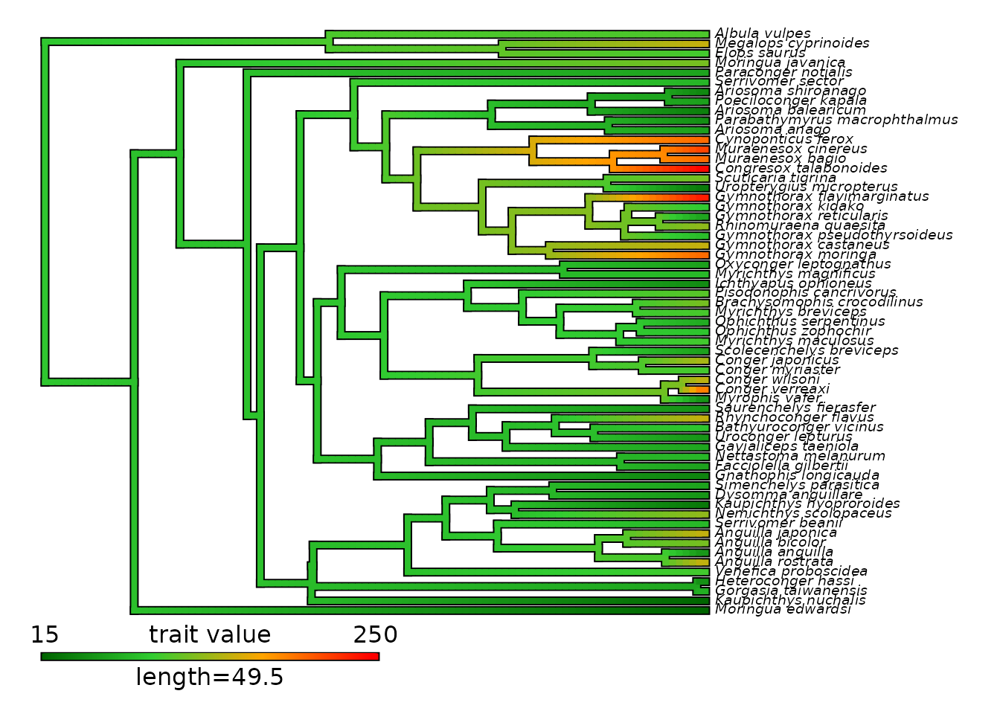
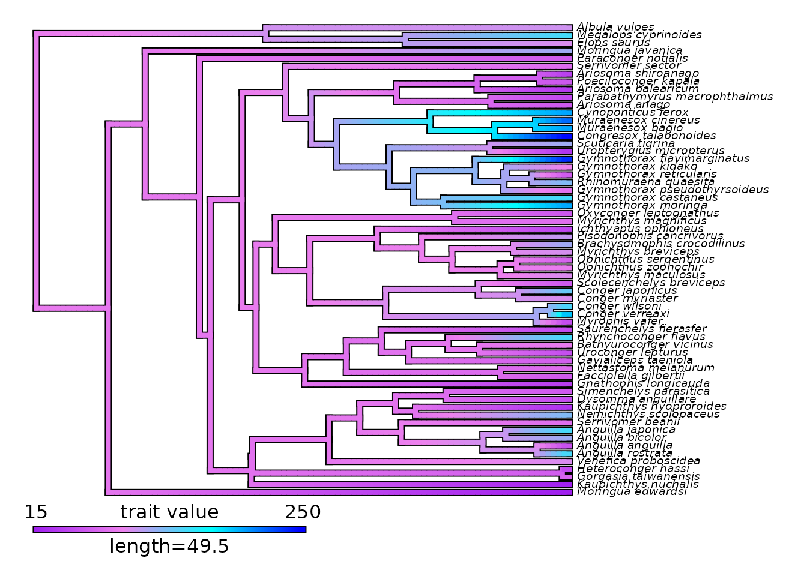

Model continuous trait evolution
Maël Doré
2025-09-30
Source:vignettes/model_continuous_trait_evolution.Rmd
model_continuous_trait_evolution.Rmd
This vignette presents the different options available to model
continuous trait evolution within deepSTRAPP.
It builds mainly upon functions from R packages [geiger]
and [phytools] to offer a simplify framework to model and
visualize continuous trait evolution on a
time-calibrated phylogeny.
Please, cite also the
initial R packages if you are using deepSTRAPP for this purpose.
For an example with categorical data, see this
vignette: vignette("model_categorical_trait_evolution")
For an example with biogeographic data, see this
vignette:
vignette("model_biogeographic_range_evolution")
# ------ Step 0: Load data ------ #
## Load phylogeny and tip data
library(phytools)
data(eel.tree)
data(eel.data)
# Dataset of feeding mode and maximum total length from 61 species of elopomorph eels.
# Source: Collar, D. C., P. C. Wainwright, M. E. Alfaro, L. J. Revell, and R. S. Mehta (2014)
# Biting disrupts integration to spur skull evolution in eels. Nature Communications, 5, 5505.
# Extract body size
eel_tip_data <- stats::setNames(eel.data$Max_TL_cm,
rownames(eel.data))
plot(eel.tree)
ape::Ntip(eel.tree) == length(eel_tip_data)
## Check that trait tip data and phylogeny are named and ordered similarly
all(names(eel_tip_data) == eel.tree$tip.label)
# Reorder tip_data as in phylogeny
eel_tip_data <- eel_tip_data[eel.tree$tip.label]
# ------ Step 1: Prepare continuous trait data ------ #
## Goal: Map continuous trait evolution on the time-calibrated phylogeny
# 1.1/ Fit evolutionary models to trait data using Maximum Likelihood.
# 1.2/ Select the best fitting model comparing AICc.
# 1.3/ Infer ancestral characters estimates (ACE) at nodes.
# 1.4/ Infer ancestral states along branches using interpolation to produce a `contMap`.
library(deepSTRAPP)
# All these actions are performed by a single function: deepSTRAPP::prepare_trait_data()
?deepSTRAPP::prepare_trait_data()
# Model selection is performed internally with deepSTRAPP::select_best_model_from_geiger()
?deepSTRAPP::select_best_model_from_geiger()
# Plotting of the contMap is carried out with deepSTRAPP::plot_contMap()
?deepSTRAPP::plot_contMap()
## Macroevolutionary models for continuous traits
?geiger::fitContinuous() # For more in-depth information on the models available
## 7 models from geiger::fitContinuous() are available
# "BM": Brownian Motion model.
# Default model that assumes a Brownian random walk in the trait space.
# No trend. No time-dependence.
# Correlation structure is proportional to the extent of shared ancestry for pairs of species.
# sigma² ('sigsq') is the evolutionary rate that represents
# the expected variance in traits in proportion to time.
# 'z0' is the ancestral character estimate (trait value) at the root.
# "OU": Ornstein-Uhlenbeck model.
# Random walk with a central tendency (= an optimum).
# Attraction toward the central tendency is controlled by parameter 'alpha'.
# "EB": Early-burst model.
# Time-dependent model where rate of evolution increases or decreases exponentially
# through time under the model r[t] = r[0] * exp(a * t), where r[0] is the initial rate,
# 'a' is the rate change parameter, and t is time. By default, 'a' is set to be negative,
# therefore the model represents a decelerating rate of evolution.
# Parameter estimate boundaries can be change to allow accelerating evolution
# with positive values of 'a' (as in the ACDC model).
# "rate_trend": Linear trend model.
# Time dependent model where rate of evolution varies linearly with time
# (i.e., following a slope). If the 'slope' parameter is positive,
# rates are increasing, and conversely.
# "lambda": Pagel's lambda model
# Based on branch length transformation. Modulates the extent to which the phylogeny
# predicts covariance among trait values for species (i.e., the degree of phylogenetic signal).
# The model multiplies all internal branch lengths by 'lambda'.
# 'lambda' close to zero indicates no phylogenetic signal.
# 'lambda' close to one approximate the 'BM' model and indicates strong phylogenetic signal.
# "kappa": Pagel's kappa model.
# Based on branch length transformation. Punctuational (speciational) model where
# trait divergence is related to the number of speciation events between pairs of species.
# Assumes that speciation events are responsible for trait divergence.
# The model raises all branch lengths to an estimated power 'kappa'.
# 'kappa' close to zero indicates a strong dependency of trait evolution on speciation events.
# 'kappa' close to one approximate the 'BM' model and indicates strong phylogenetic signal.
# "delta": Pagel's delta model.
# Based on branch length transformation. Time-dependent model that modulates
# the relative contributions of early vs. late evolution in the tree.
# The model raises all node depths to an estimated power 'delta'.
# 'delta' close to one approximate the 'BM' model and indicates strong phylogenetic signal.
# 'delta' lower than one gives more weight to early evolution, thus represents decelerating rates.
# 'delta' higher than one gives more weight to late evolution, thus represents accelerating rates.
## Model trait data evolution
eel_cont_data <- prepare_trait_data(
tip_data = eel_tip_data,
trait_data_type = "continuous",
phylo = eel.tree,
seed = 1234, # Set seed for reproducibility
# All possible models
evolutionary_models = c("BM", "OU", "EB", "rate_trend", "lambda", "kappa", "delta"),
control = list(niter = 200), # Example of additional parameters that can be pass down
# to geiger::fitContinuous() to control parameter optimization.
res = 100, # To set the reoslution of the continuous mapping of trait value on the contMap
color_scale = c("darkgreen", "limegreen", "orange", "red"),
plot_map = FALSE,
# PDF_file_path = "./eel_contMap.pdf", # To export in PDF the contMap generated
return_ace = TRUE, # To include Ancestral Character Estimates (ACE) at nodes in the output
return_best_model_fit = TRUE, # To include the best model fit in the output
return_model_selection_df = TRUE, # To include the df for model selection in the output
verbose = TRUE) # To display progress
# ------ Step 2: Explore output ------ #
## Explore output
str(eel_cont_data, 1)
## Extract the contMap showing interpolated continuous trait evolution
## on the phylogeny as estimated from the model
eel_contMap <- eel_cont_data$contMap
# Plot with initial color_scale
plot_contMap(eel_contMap,
fsize = c(0.6, 1)) # Adjust tip label size
# Plot with updated color_scale
plot_contMap(contMap = eel_contMap,
color_scale = c("purple", "violet", "cyan", "blue"),
fsize = c(0.6, 1)) # Adjust tip label size
# The contMap is the main input needed to perform a deepSTRAPP run on continuous trait data.
## Extract the Ancestral Character Estimates (ACE) = trait values at nodes
eel_ACE <- eel_cont_data$ace
head(eel_ACE)
# This is a named numerical vector with names = internal node ID and values = ACE.
# It can be used as an optional input in deepSTRAPP run to provide
# perfectly accurate estimates for trait values at internal nodes.
## Explore summary of model selection
eel_cont_data$model_selection_df # Summary of model selection
# Models are compared using the corrected Akaike's Information Criterion (AICc)
# Akaike's weights represent the probability that a given model is the best among
# the set of candidate models, given the data.
# Here, the best model is Pagel's lambda
## Explore best model fit (Pagel's lambda)
eel_cont_data$best_model_fit # Summary of best model optimization by geiger::fitContinuous()
eel_cont_data$best_model_fit$opt # Parameter estimates and goodness-of-fit information
# 'lambda' = 0.636. The best model detects a moderate degree of phylogenetic signal.
## Inputs needed to run deepSTRAPP are the contMap (eel_contMap), and optionally,
## the tip_data (eel_tip_data), and the ACE (eel_ACE)

#> model logL k AICc Akaike_weights rank
#> BM BM -338.9352 2 682.0773 0.0 6
#> OU OU -329.2538 3 664.9287 28.0 3
#> EB EB -338.9355 3 684.2921 0.0 7
#> rate_trend rate_trend -335.1346 3 676.6902 0.1 5
#> lambda lambda -328.9440 3 664.3090 38.2 1
#> kappa kappa -329.0984 3 664.6179 32.7 2
#> delta delta -332.6586 3 671.7383 0.9 4